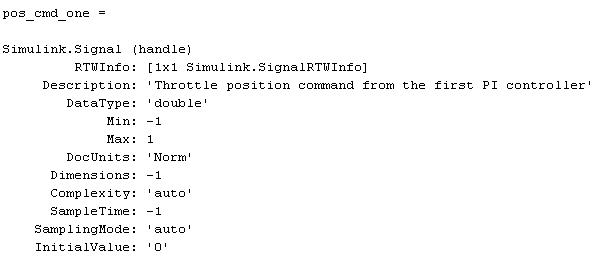
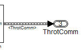
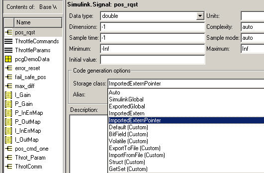
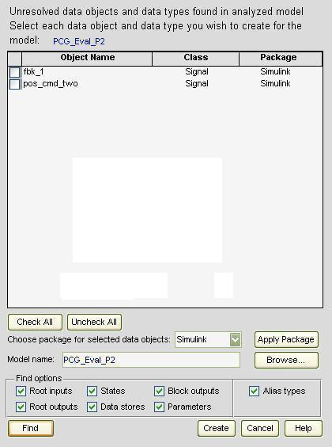
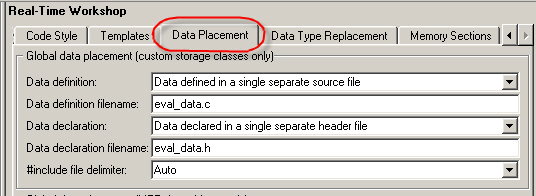
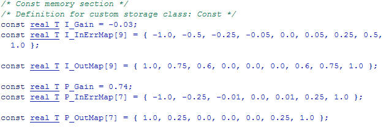
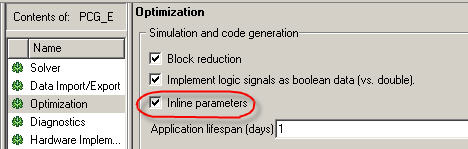
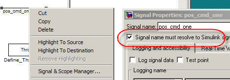
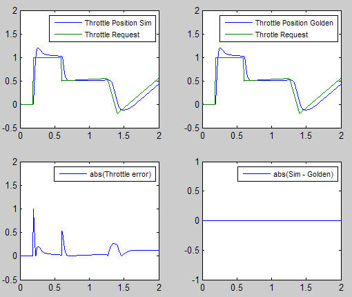
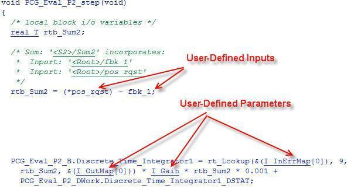

データ インターフェイスの設定
概要:生成コード内で信号とパラメーターの指定を記述します。
所要時間: 45 分
目的
生成コード内で信号とパラメーターの次の属性について、制御方法を学習します。
- 名前
- データ型
- データ ストレージ クラス
目次
背景:データの宣言
ほとんどのプログラミング言語では、使用前にデータと関数を宣言する必要があります。宣言により、以下の事項を指定します。
| スコープ | データにアクセスできるプログラムの領域 |
| 持続時間 | データがメモリ内に維持されている時間 |
| データ型 | データに割り当てられるメモリの量 |
| 初期化 | 値、メモリのポインター、または NULL |
スコープと持続時間を組み合わせたものがストレージ クラスです。初期値を指定しない場合、ほとんどのコンパイラはゼロ値または null ポインターを割り当てます。
| 名前 | 説明 |
| double | 倍精度浮動小数点 |
| single | 単精度浮動小数点 |
| int8 | 符号付き 8 ビット整数 |
| uint8 | 符号なし 8 ビット整数 |
| int16 | 符号付き 16 ビット整数 |
| uint16 | 符号なし 16 ビット整数 |
| int32 | 符号付き 32 ビット整数 |
| uint32 | 符号なし 32 ビット整数 |
| 固定小数点 | 8 ビット、16 ビット、32 ビット語長 |
| 名前 | 説明 | サポートされている パラメーター |
サポートされている 信号 |
データ型 |
| Const | 宣言で const 型修飾子を使用する | Y | N | すべて |
| ConstVolatile | 宣言で const volatile 型修飾子を使用する | Y | N | すべて |
| Volatile | 宣言で volatile 型修飾子を使用する | Y | Y | すべて |
| ExportToFile | グローバル変数宣言と定義を含む、ユーザー指定の名前を持つファイルを生成してインクルードする | Y | Y | すべて |
| ImportFromFile | グローバル変数宣言を含む、事前定義されたヘッダー ファイルをインクルードする | Y | Y | すべて |
| Exported Global | グローバル スコープの変数を宣言して定義する | Y | Y | すべて |
| Imported Extern | モデルのスコープ外で定義される変数をインポートする | Y | Y | すべて |
| BitField | 名前付きのビット フィールドで boolean データを組み込む | Y | Y | boolean |
| Define | #define マクロでパラメーターを表す | Y | N | すべて |
| Struct | 名前付きの構造体にデータを組み込み、データ セットをカプセル化する | Y | Y | すべて |
Simulink と Stateflow でのデータ制御
Simulink® と Stateflow® では、データ オブジェクトと直接指定の 2 つの方法でデータを宣言できます。このデモではデータ オブジェクトの方法を使用します。いずれの方法でもデータ型とストレージ クラスを完全に制御することができます。また 1 つのモデル内で 2 つの方法を組み合わせることもできます。
MATLAB® と Simulink の環境ではデータ オブジェクトをさまざまな方法で使用することができます。デモではデータ オブジェクトの 3 つのタイプに焦点を合わせて説明します。
- 信号
- パラメーター
- バス
コード ジェネレーターは MATLAB ベース ワークスペースからのデータ オブジェクトを使用します。MATLAB コマンド ウインドウでコマンドを入力するか、モデル エクスプローラーを使用してデータ オブジェクトを作成し、検査することができます。
次の例は、Simulink 信号オブジェクト pos_cmd_one の定義を示しています。

モデル エクスプローラーを開き、デモ モデルの指定したデータ オブジェクトの詳細を表示することができます。
次の表でそれぞれのオブジェクト名をクリックしてください。
| pos_cmd_one | pos_rqst | P_InErrMap | ThrotComm(1) | ThrottleCommands(1) | |
| 説明 | 最上位出力 | 最上位入力 | キャリブレーション パラメーター | 最上位出力構造体 | バス定義 |
| データ型 | 倍精度 | 倍精度 | 自動 | 自動 | Struct |
| ストレージ クラス | Exported Global | Imported Extern Pointer | 定数 | Exported Global | なし |
(1) ThrottleCommands は Simulink バス オブジェクトを定義し、ThrotComm はバスのインスタンス化です。バスが非バーチャル バスの場合、信号は C コード内に構造体を生成します。
C コードの場合と同様に、バス定義 (ThrottleCommands) を使用して構造体の複数のインスタンスをインスタンス化できます。下記のモデル ダイアグラムでは、バス オブジェクトは中心に点線のある幅広線で表示されています。

次の図は信号名 pos_rqst をクリックした場合の、モデル エクスプローラーの表示を示します。

データ オブジェクトにはアクティブ フィールドと記述的フィールドが混在しています。アクティブ フィールドはシミュレーションまたはコード生成に影響します。記述的フィールドはシミュレーションまたはコード生成に影響しませんが、データ ディクショナリやモデル チェック ツールと共に使用されます。
アクティブ フィールド
- データ型
- ストレージ クラス
- 値 (パラメーター)
- 初期値 (信号)
- エイリアス (生成コード内で別の名前を定義)
- 次元 (パラメーター用に継承)
- 複雑度 (パラメーター用に継承)
記述的フィールド
- 最小値
- 最大値
- 単位
- 説明
新しいデータ オブジェクトの追加
名前付きの信号、ステート、パラメーター用にデータ オブジェクトを作成することができます。データ オブジェクトを構造と関連付けるには、構造に名前が付いていなければなりません。
データ オブジェクト ウィザードは目的とする構造を検索してそのデータ オブジェクトを作成するツールです。デモ モデルにはデータ オブジェクトと関連付けされていない 2 つの信号、fbk_1 と pos_cmd_two が含まれています。
信号を検索し、信号用のデータ オブジェクトを作成するには:
1. タスク: データ オブジェクト ウィザードを開きます。

2. [検索] をクリックして構造の候補を検索します。
3. [すべてチェック] をクリックしてすべての候補を選択します。
4. [パッケージを適用] をクリックしてデータ オブジェクト用の Simulink パッケージを適用します。
5. [作成] をクリックしてデータ オブジェクトを作成します。
データ オブジェクトの設定
次のステップではデータ型とストレージ クラスを設定します。
1. 次の表内の名前をクリックしてデータ オブジェクトを編集します。
| データ オブジェクト | データ型 | ストレージ クラス |
| Edit fbk_1 | 倍精度 | Imported Extern |
| Edit pos_cmd_two | 倍精度 | Exported Global |
名前をクリックするとモデル エクスプローラーが開き、ベース ワークスペースが表示されます。
2. 上の表にリストされた各オブジェクトについて、[コンテンツ] ペインの信号名をクリックします。
3. 表の設定と一致するよう [データ] ペインのフィールド設定を変更します。
メモ:2 つの信号のいずれかでモデル エクスプローラーが開かない場合は、「新しいデータ オブジェクトの追加」のステップを繰り返してください。
パラメーター データのファイル配置の制御
Real-Time Workshop® Embedded Coder™ を使用して、パラメーターや定数が定義されているファイルを制御します。デモ モデルでは、すべてのパラメーターはファイル eval_data.c に記述されています。
パラメーターと定数の定義の配置を変更するには、モデル設定で適切なデータ配置オプションを設定します。モデル エクスプローラーで、[設定]、[Real-Time Workshop]、[データ配置] を選択し、オプションを設定します。このデモでは、モデルは設定済みです。
1. タスク: [コンフィギュレーション パラメーター] ダイアログの [データ配置] ペインを開きます。
2. 次の図に示すように、[データ配置] ペインにデータを入力します。

eval_data.c 用に生成されたコードは次のとおりです。

生成コードでのデータ オブジェクトの有効化
次のステップでは、作成したデータ オブジェクトを生成コードで表示します。生成コードでパラメーターを有効にするには、モデル設定でインライン パラメーター オプションを設定します。モデル エクスプローラーで、このオプションを次のように設定します。
[設定]、[最適化]、[シミュレーションとコード生成]、[インライン パラメーター]

タスク: インライン パラメーター オプションを設定します。
生成コードで信号を有効にするには
1. 信号線を右クリックします。
2. コンテキスト メニューから [信号プロパティ] を選択します。[信号プロパティ] ダイアログ ボックスが表示されます。
3. [信号名を Simulink の信号オブジェクトに関連付ける] オプションが選択されていることを確認してください。

信号をデータ オブジェクトと個別に関連付けることも、MATLAB コマンド ウィンドウで disableimplicitsignalresolution と入力してすべての信号をモデル内で同時に有効にすることもできます。
タスク: データ オブジェクトと関連付けられたすべての信号を有効にします。
データ型に対するシミュレーションの影響
デモ モデルでは、すべてのデータ型は double に設定されています。Simulink は double データ型をシミュレーションに使用するため、生成コードを実行する場合にモデルの動作に変化はありません。これを検証するには、テスト ハーネス モデルを実行します。テスト ハーネス モデルは自動的に更新され、rtwdemo_PCG_Eval_P2 モデルがインクルードされます。これが、テスト ハーネスに生じる唯一の変化です。
結果のプロット図は、モデルのゴールデン バージョンと計算バージョンの差がゼロであることを示しています。

生成コードのデータ オブジェクトの表示
ファイル rtwdemo_PCG_Eval_P2.c を開き、データ オブジェクトの使用で生成コードがどのように変化したかを見てみましょう。
次の表内の名前をクリックして、生成コードを表示します。
| ファイル | 定義 | 注意 |
| rtwdemo_PCG_Eval_P2.c | ステップと初期化関数を提供する | 定義されたデータ オブジェクトを使用する |
| eval_data.c | 定義されたパラメーターに値を割り当てる | 特別に定義されたファイル名を使用する |
| eval_data.h | 定義されたパラメーターに対して外部定義を提供する | 特別に定義されたファイル名を使用する |
| ert_main.c | スケジューリング機能を提供する | 変更なし |
| rtwdemo_PCG_Eval_P2.h | データ構造を定義する | このファイルからいくつかのパラメーターを user_data.h にシフトしたデータ オブジェクトを使用する |
| PCG_Eval_p2_private.h | 生成した関数用にプライベート (ローカル) データを定義する | eval_data で定義されたオブジェクトが削除された |
| rtwdemo_PCG_Eval_P2_types.h | モデル データ構造を定義する | 変更なし |
| rtwtypes.h | Real-Time Workshop で定義されたデータ型へのマッピングを提供する | 外部システムとの統合に使用される |
次の図は、データ オブジェクトを使用する前に rtwdemo_PCG_Eval_P2.c で表示される、関数 rtwdemo_PCG_Eval_P2_step 用のコードを示します。

下の図はデータ オブジェクトを使用した場合に rtwdemo_PCG_Eval_P2.c に表示されるコードを示しています。

この図を見ると、大半の Real-Time Workshop データ構造がユーザー定義のデータ オブジェクトに置き換えられたことがわかります。ローカル変数 rtb_Sum2 と状態変数 rtwdemo_PCG_Eval_P2_DWork.Discrete_Time_Integrator1_DSAT は Real-Time Workshop データ構造を使用しています。
データ管理
データ オブジェクトは MATLAB ベース ワークスペース内に存在します。それらはモデルから別のファイルに保存されています。データを手動で保存するには、MATLAB コマンド ウィンドウに save と入力します。
データをモデルと区別しておくと、多くの利点があります。
- 1 つのモデル、複数のデータ セット
- 異なるデータ型を使用してターゲット ハードウェアを変更する (たとえば、浮動小数点と固定小数点ターゲット)
- 異なるパラメーター値を使用して制御アルゴリズムの動作を変更する (たとえば、キャリブレーション値の異なる再使用可能なコンポーネント)
- 複数のモデル、1 つのデータ セット
- システム内の Simulink モデル間でデータを共有する
- プロジェクト間でデータを共有する (たとえば、トランスミッション制御、エンジン制御、ホイール制御ですべて同じメッセージ データ セットを使用する可能性がある)